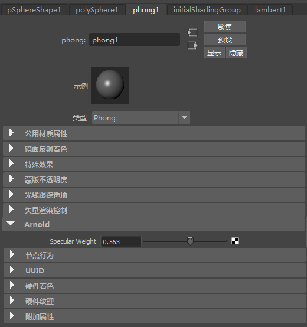

现在，我们可能需要 Phong 转换器的某个特定属性，但 Maya 节点中没有该属性。这时我们可以创建该属性，并在节点的属性编辑器中为 Arnold 属性添加一个部分。
我们将使用 Phong 转换器，向其中添加一个镜面反射权重属性，该属性将用在 Arnold 转换器中。
首先，我们需要 NodeInitializer 方法。
translator2.h
#include "translators/shader/ShaderTranslator.h"
class CTestTranslator2
: public CShaderTranslator
{
public:
AtNode* CreateArnoldNodes();
virtual void Export(AtNode*);
static void* creator();
static void NodeInitializer(CAbTranslator context);
}; 在该方法中，我们将使用所需的特性创建这个特定属性。我们可以在这里定义软性和硬性范围来限制属性值。
translator2.cpp
#include "translator2.h"
#include <ai_msg.h>
#include <ai_nodes.h>
void CTestTranslator2::Export(AtNode* shader)
{
AiMsgInfo("[test extension2] Exporting %s", GetMayaNodeName().asChar());
AiNodeSetFlt(shader, AtString("base"), FindMayaPlug("diffuse").asFloat() );
AiNodeSetRGB(shader, AtString("base_color"),
FindMayaPlug("colorR").asFloat(),
FindMayaPlug("colorR").asFloat(),
FindMayaPlug("colorR").asFloat());
AiNodeSetFlt(shader, AtString("specular"), FindMayaPlug("aiSpecularWeight").asFloat() );
}
AtNode* CTestTranslator2::CreateArnoldNodes()
{
return AddArnoldNode("standard_surface");
}
void* CTestTranslator2::creator()
{
return new CTestTranslator2();
}
void CTestTranslator2::NodeInitializer(CAbTranslator context)
{
CExtensionAttrHelper helper(context.maya, "standard_surface");
CAttrData data;
// Add new atterbute to the Phong node for the arnold parameter "specular_weight"
data.name = "aiSpecularWeight";
data.shortName = "ai_specular_weight";
data.hasSoftMin = true;
data.softMin.FLT() = 0.1f;
data.hasSoftMax = true;
data.softMax.FLT() = 0.9f;
data.hasMin = true;
data.min.FLT() = 0.f;
data.hasMax = true;
data.max.FLT() = 1.0;
data.defaultValue.FLT() = 0.5f;
helper.MakeInputFloat(data);
}最后，在注册扩展时，我们需要提供 NodeInitializer 方法：
extension2.cpp
#include "translator2.h"
#include "extension/Extension.h"
extern "C"
{
DLLEXPORT void initializeExtension(CExtension &plugin)
{
plugin.RegisterTranslator("phong",
"",
CTestTranslator2::creator,
CTestTranslator2::NodeInitializer);
}
DLLEXPORT void deinitializeExtension(CExtension &plugin)
{
}
}最后还要做的一件事是，在“属性编辑器”(Attribute Editor)中创建一个“Arnold”部分来显示此属性。我们可以通过在以下同一文件夹中放置一个与编译的扩展同名的 python 文件来实现这一点：MTOA_PATH/extensions, or by using the environment variable MTOA_TEMPLATES_PATH
extension2.py
import mtoa.ui.ae.templates as templates
from mtoa.ui.ae.templates import AttributeTemplate
class Phong2Template(AttributeTemplate):
def setup(self):
self.addControl("aiSpecularWeight")
templates.registerAETemplate(Phong2Template, 'phong')这将在 Phong 着色器的“属性编辑器”(Attribute Editor)中创建一个类似如下的部分：
